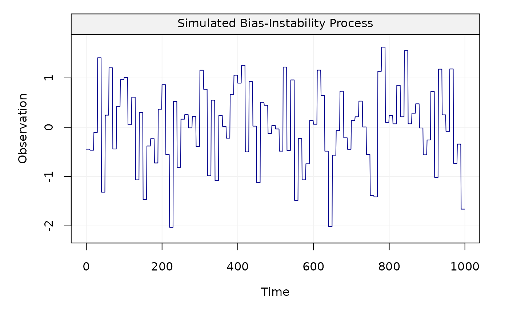
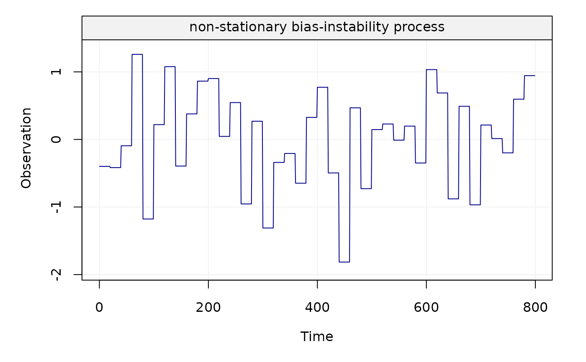

This function allows us to generate a non-stationary bias-instability process.
gen_bi(sigma2, n_total, n_block, title = NULL, seed = 135, ...)
| sigma2 | A |
|---|---|
| n_total | An |
| n_block | An |
| title | A |
| seed | An |
| ... | Additional parameters. |
A vector containing the bias-instability process.
This function helps generate a non-stationary process example, bias-instability, whose theoretical maximum overlapping allan variance (MOAV) is close to the theoretical MOAV of its closest stationary AR(1) process over some scales. However, this approximation is not good enough when considering the logarithmic representation of the allan variance. Therefore, the exact form of the allan variance of this non-stationary process allows us to better interpret the signals characterized by bias-instability, as shown in "A Study of the Allan Variance for Constant-Mean Non-Stationary Processes" by Xu et al. (IEEE Signal Processing Letters, 2017), preprint available: https://arxiv.org/abs/1702.07795.
Xt = gen_bi(sigma2 = 1, n_total = 1000, n_block = 10) plot(Xt)Yt = gen_bi(sigma2 = 0.8, n_total = 800, n_block = 20, title = "non-stationary bias-instability process") plot(Yt)